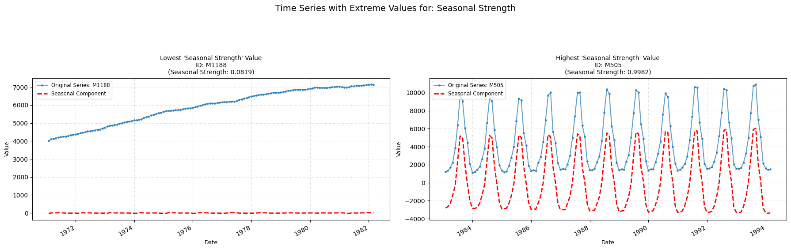

Seasonal strength
seasonal_strength
Computes the strength of seasonality within the time-series.
Low value: A value close to zero means there are few/none indicators of seasonality in the time series.
High value: A value close to one means there are strong signs of seasonality in the time-series.

Parameters Table
| Parameter | Type | Default | Description |
|---|---|---|---|
| period | int | '1' | Frequency of the time series (e.g. 12 for monthly) |
| seasonal | int | 7 | Length of the seasonal smoother (must be odd). |
| robust | bool | False | Flag for robust fitting. |